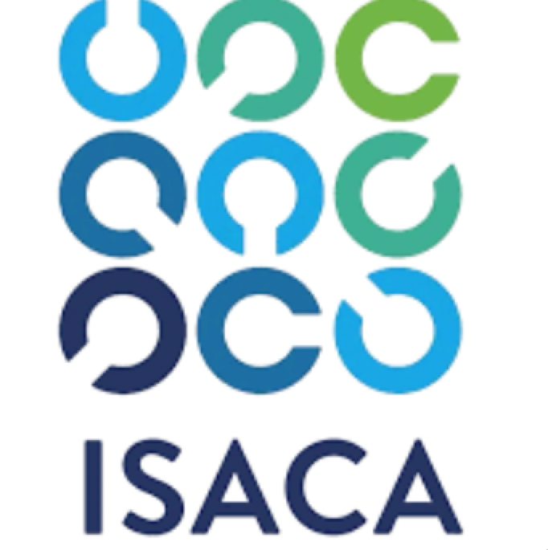
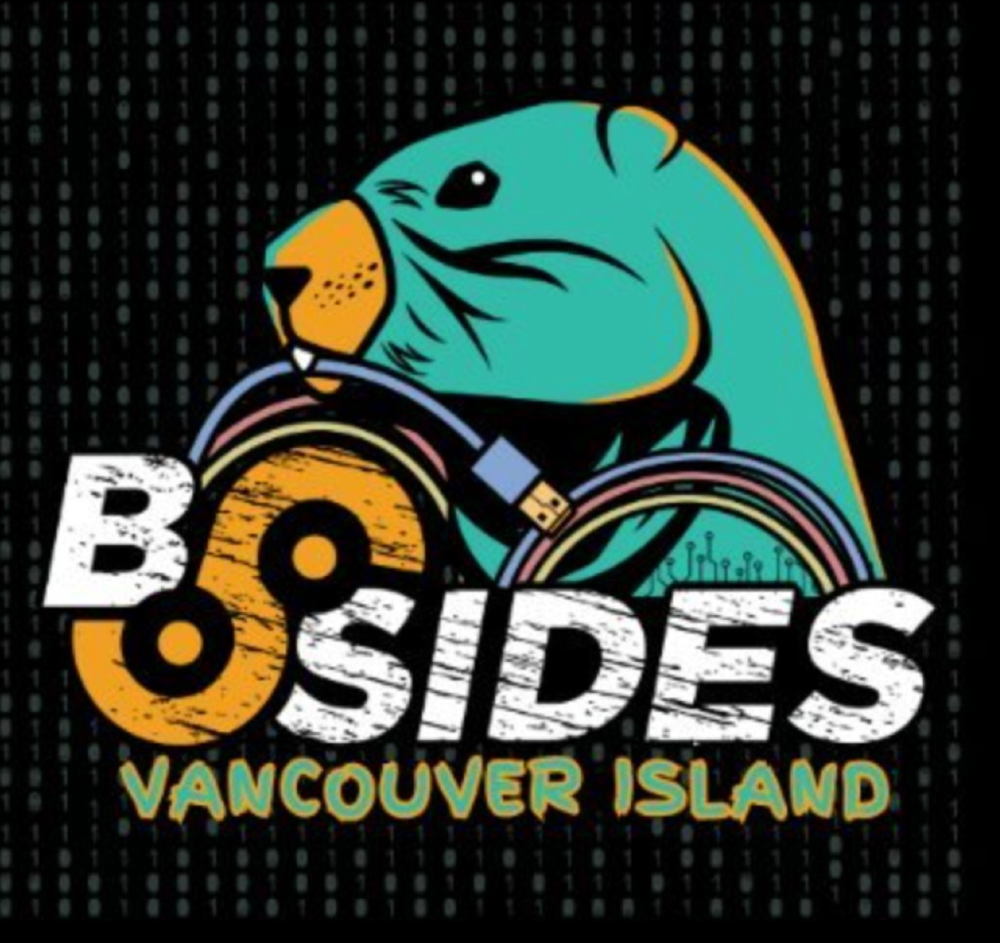
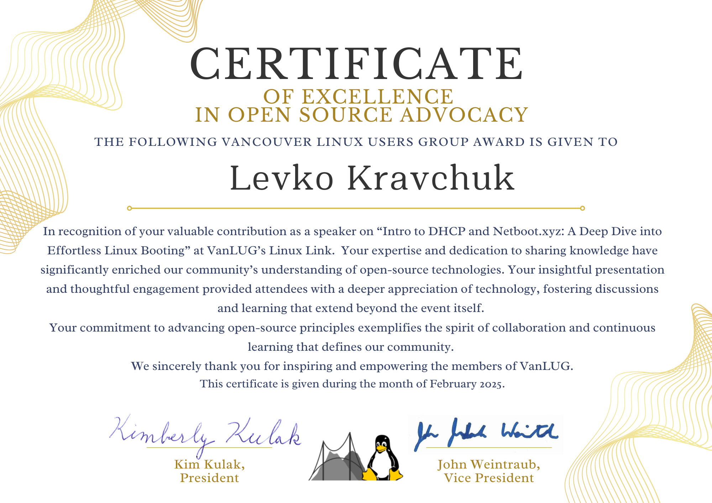
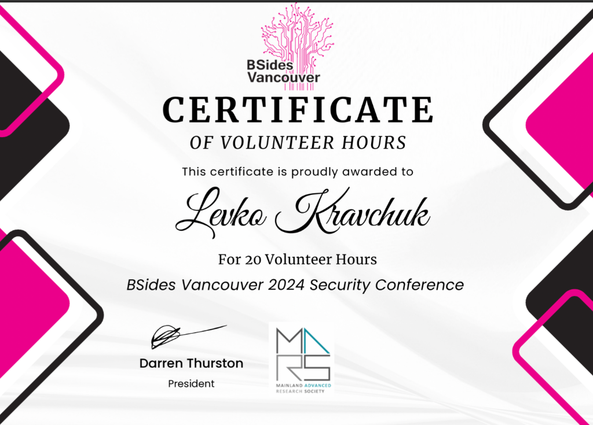

ISACA Vancouver Chapter
Volunteer • Oct 2025 - Present
Волонтер у Vancouver Chapter ISACA — міжнародна організація з IT аудиту та безпеки.

BSides Vancouver Island 2025
Volunteer • Oct 2025
Волонтер на BSides Vancouver Island 2025 — конференція з кібербезпеки.
BSides Vancouver 2025
Volunteer
Волонтер на BSides Vancouver 2025 — щорічна конференція з кібербезпеки.

VanLUG
Vancouver Linux Users Group
Активний учасник спільноти користувачів Linux у Ванкувері. VanLUG об'єднує ентузіастів Linux та open source технологій.

BSides Vancouver 2024
Volunteer • May 2024
BSides Vancouver — це некомерційна конференція з кібербезпеки, що об'єднує професіоналів, дослідників та ентузіастів безпеки.
Rocky Linux
Technical Translator • Jun 2023 - Apr 2024
Локалізація документації Rocky Linux українською мовою.
Google I/O Extended
Volunteer • Vancouver • Jun 2023 - Jan 2024
Волонтер на Google I/O Extended Vancouver.
Інша діяльність
Ця секція буде доповнена інформацією про інші волонтерські активності та участь у спільноті BC.
Плани на майбутнє:
- Tech meetups
- IT Mentorship
- Ukrainian Community